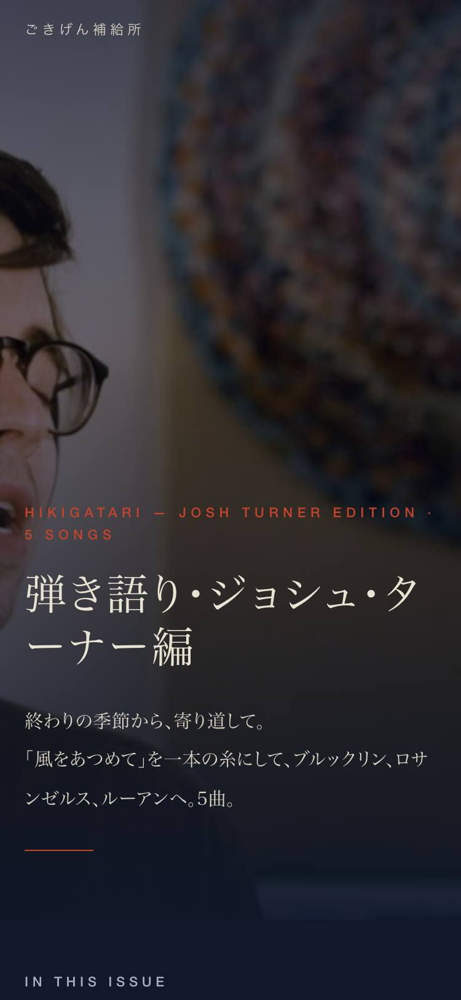
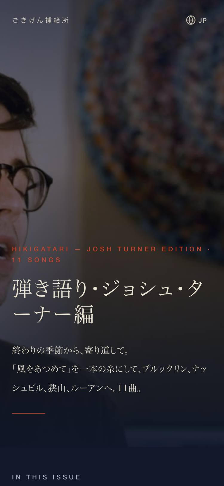
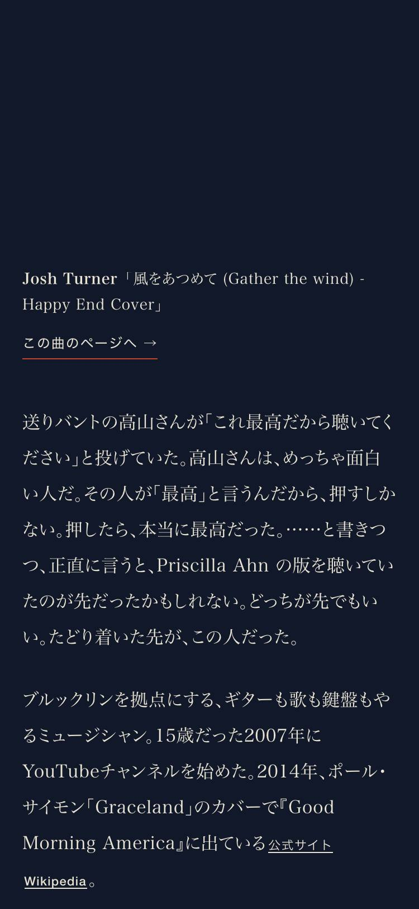
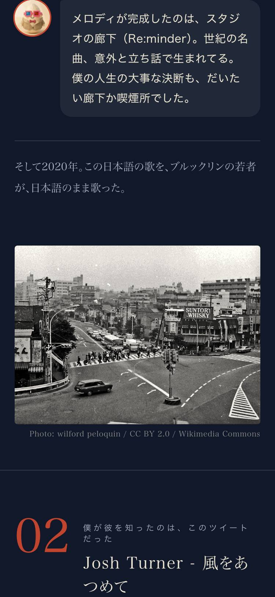
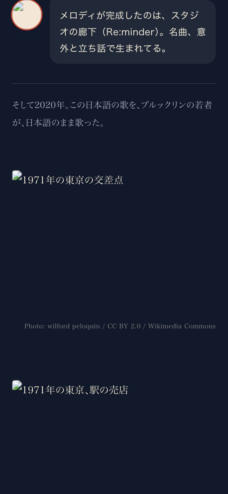

| 確認項目 | 結果 |
|---|---|
| 本番URLが200で開く（curl 実測 74,924B） | OK |
| 章が11・静止画7・吹き出し7（本番HTMLの class を数えた） | OK |
| 5言語の切替（地球マーク）と訳ファイルが本番にある | OK |
| 物語の関所（magazine_monogatari_kanmon） | PASS |
| 見た目の統一の関所（unify_look --check） | PASS |
| 後退の関所（koutai_kanmon --check-files） | PASS（5→11章に増えた分は基準値を本番の大きさに更新） |
| 曲ページへの導線 | 6曲に貼った。残り5曲（Josh版 Sultans of Swing・Graceland・Angelina・The Chain・Crazy）と細野「終りの季節」はサイトに曲ページが無く、新規掲載はたまごさんの判断領域なので貼っていない |